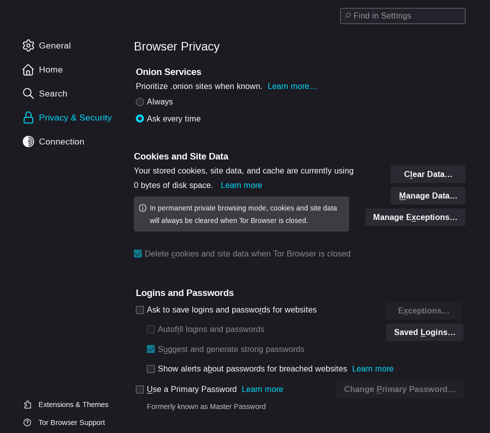
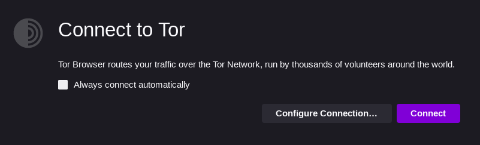

Avant tout, sachez qu'il existe plusieurs moyens d'accéder au dark web. Ici, nous n'utiliserons qu'un seul logiciel : Tor. Ce logiciel nous permettra d'accéder aux sites dont le domaine est .onion. C'est ce domaine que la plupart des sites du dark web possèdent. Cependant, ils existent d'autres domaines pour des sites du dark web, tels que .i2p ou .bit.
Pour télécharger Tor, cliquez sur ce lien : Tor
Pour plus de sécurité, vous pouvez télécharger un VPN. Le VPN vous rendra encore plus difficilement retraçable.
Voici plusieurs liens pour des VPN, choisissez celui qui vous convient le plus (déso on n'a pas de code promo c quand la sponso svp argent j'aime):
Avant de vous lancez dans l'exploration du Dark Web, rendez-vous dans la section "Privacy & Security" de Tor. Configurez les paramètres selon vos besoins.
Après avoir configurer le navigateur Tor, cliquez sur "Connect". Cela vous connectera au réseau Tor, ce qui vous permettra d'accéder aux sites en .onion.

Maintenant que tout est prêt, il ne vous reste plus qu'à accéder à un site du Dark Web. Mais comment en trouver un ?
Il existe des sites sur le Dark Web répertoriant d'autres sites. En voici un : s4k4ceiapwwgcm3mkb6e4diqecpo7kvdnfr5gg7sph7jjppqkvwwqtyd.onion
Sachez que certains sites web du Surface Web disposent d'un site en .onion. Parmis eux, on peut retrouver :
Le Dark Web est un endroit dangereux. Ne cliquez sur aucun lien, ne téléchargez aucun fichier et ne partagez aucune information personnelle.
Il y a plusieurs types de problème :
Régler vos problèmes grâce à la justice en prenant un avocat : https://www.cnb.avocat.fr/fr/annuaire-des-avocats-de-france
Une solution bien plus radical serait de vous faire changer totalement de vie.
Avant de commencer, payez un billet d'avion vers les USA puis transférez tout votre argent en Bitcoin. La plupart des achats sur le Dark Web se font en Bitcoin (pour l'anonymat), vous en aurez besoin pour la suite.
Après avoir obtenu vos Bitcoins, il faut par changer votre identité : gd5x24pjoan2pddc2fs6jlmnqbawq562d2qyk6ym4peu5ihzy6gd4jad.onion
Ce site est "USAcitizenship" et il vous permettra de devenir un citoyen des USA.
Ensuite, il faut effacer toute trace de votre ancienne vie : hkq4okz5kf4xosbsnvdr45uukjhbm4oameb6k6agjjsydycvflcewl4qd.onion
Ce site est "Rent-A-Hacker", il vous permettra d'engager un hacker. Demandez-lui de supprimer tous vos comptes sur internet ainsi que de supprimer tous les sites ayant des informations sur vous.
C'est presque terminé, il vous faut un nouveau mobile : rxmyl3izgquew65nicavsk6loyyblztng6puq42firpvbe32sefvnbad.onion
"Mobile Store" vous permettra d'acheter un nouveau téléphone. Concernant votre ancien téléphone, enlevez la batterie et gardez-le, car si quelqu'un retrouve votre téléphone, il pourrait retrouver des informations sur vous. Vous achèterez la carte SIM aux USA.
Et pour finir, rendez-vous aux USA et convertissez vos Bitcoins en $ : wk3mtlvp2ej64nuytqm3mjrm6gpulix623abum6ewp64444oreysz7qd.onion
Le site se nomme "We Buy Bitcoins" et il vous permettra de vendre vos Bitcoins en restant anonyme.